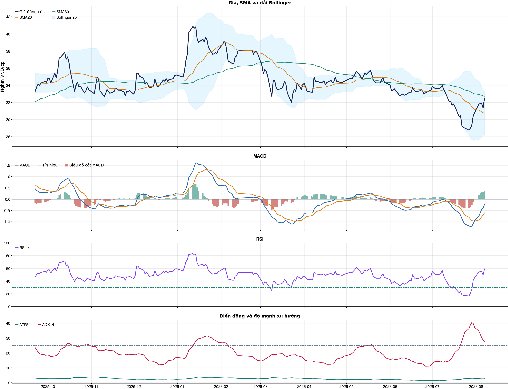
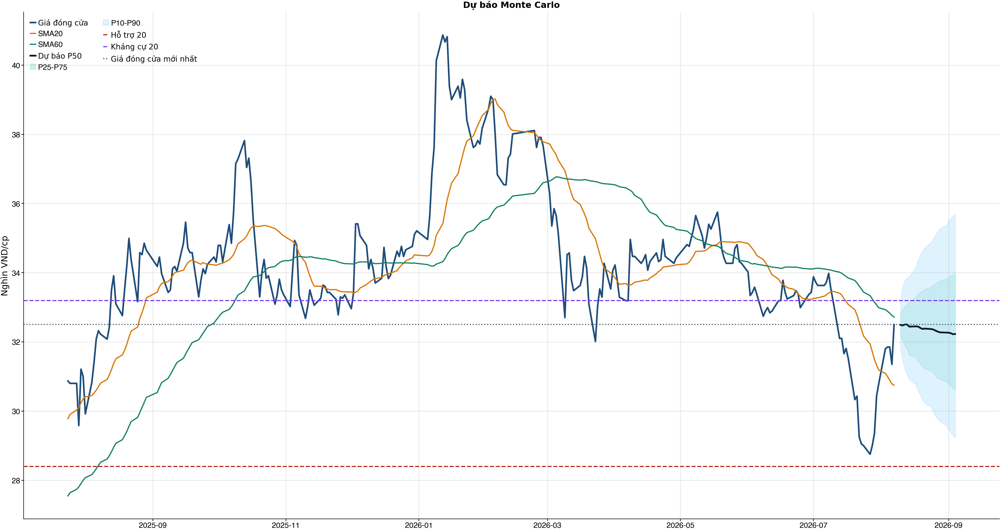
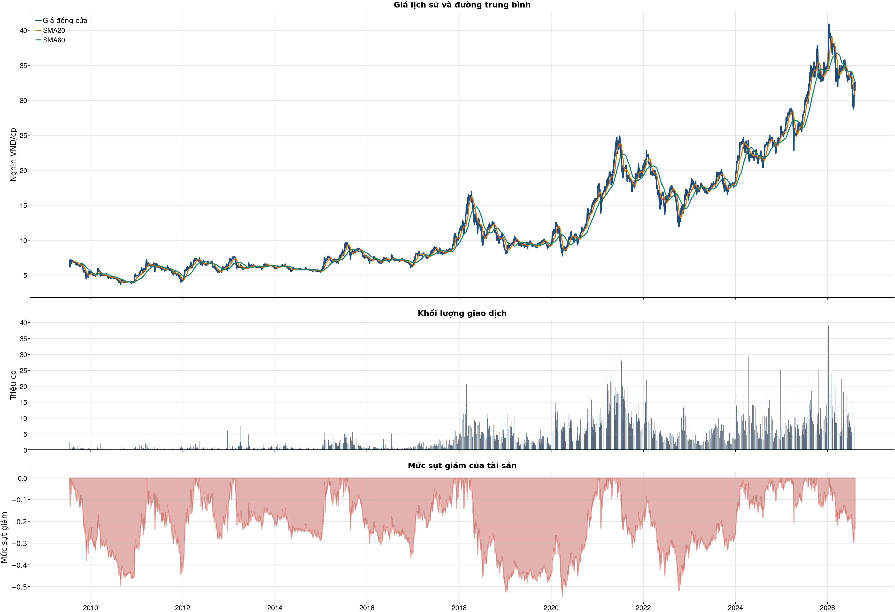

Kết quả chính
Tổng quan cơ bản
Biểu đồ kỹ thuật

Tín hiệu kỹ thuật
| Xu hướng | Cẩn thận | Giá nằm dưới SMA60. |
| MACD | Tích cực | MACD trên signal, histogram dương. |
| RSI14 | Tích cực | RSI 59.1. |
| Bollinger | Ổn định | Giá nằm trong dải Bollinger. |
| ADX | Xu hướng tăng | ADX 27.4, +DI vượt -DI. |
| Thanh khoản | Đột biến | 1.52 lần trung bình. |
| Stochastic | Cực trị | %K 89.1, %D 84.4. |
So sánh mô hình
| XGBoost | 0.502 | AUC 0.492 |
| Logistic | 0.507 | AUC 0.491 |
| Đa số | 0.500 | Mốc so sánh |
Kiểm thử chiến lược ngoài mẫu sau chi phí
| Lợi nhuận ròng | -5.9% | 661 quan sát ngoài mẫu |
| Sharpe | -0.38 | Sau chi phí |
| Mức sụt giảm tối đa | -13.8% | 22 vòng giao dịch |
| Chi phí giả định | 50.0 bps | Một vòng mua và bán |
Mức độ quan trọng của đặc trưng
| return_1d | 15.95 | Mức đóng góp |
| atr_pct_14 | 14.79 | Mức đóng góp |
| beta_60d | 14.19 | Mức đóng góp |
| close_vs_sma60 | 14.02 | Mức đóng góp |
| rsi_14 | 13.84 | Mức đóng góp |
| market_return_1d | 12.75 | Mức đóng góp |
| day_of_week | 11.33 | Mức đóng góp |
| market_volatility_20d | 10.92 | Mức đóng góp |
Điều kiện phát hành tín hiệu
| AUC của mô hình | KHÔNG ĐẠT | Điều kiện phát hành tín hiệu |
| Độ chính xác cân bằng của mô hình | KHÔNG ĐẠT | Điều kiện phát hành tín hiệu |
| XGBoost vượt mô hình Logistic đối chứng | ĐẠT | Điều kiện phát hành tín hiệu |
| Xác suất tăng đạt ngưỡng | KHÔNG ĐẠT | Điều kiện phát hành tín hiệu |
| Bối cảnh kỹ thuật đạt ngưỡng | ĐẠT | Điều kiện phát hành tín hiệu |
| Tỷ lệ lợi nhuận/rủi ro đạt ngưỡng | ĐẠT | Điều kiện phát hành tín hiệu |
| Dữ liệu còn mới | ĐẠT | Điều kiện phát hành tín hiệu |
| Có khối lượng vị thế hợp lệ | ĐẠT | Điều kiện phát hành tín hiệu |
| Có kết quả kiểm thử chiến lược ngoài mẫu | ĐẠT | Điều kiện phát hành tín hiệu |
| Mẫu kiểm thử chiến lược đủ lớn | ĐẠT | Điều kiện phát hành tín hiệu |
| Kiểm thử chiến lược có lợi thế ròng | KHÔNG ĐẠT | Điều kiện phát hành tín hiệu |
Quản trị rủi ro
| Rủi ro/lệnh | 1.0% | 1,000,000 VND |
| Mức dừng lỗ | 32.39 | Rủi ro mỗi cổ phiếu 0.27 |
| Mục tiêu 1 | 33.19 | Lợi nhuận/rủi ro 1.93 |
| Mục tiêu 2 | 35.68 | Dự báo/kháng cự |
Phân tích cơ bản
| P/E | 6.28 | 2026-Q2 |
| P/B | 1.27 | 2026-Q2 |
| P/S | 2.59 | 2026-Q2 |
| ROE | 21.8% | 2026-Q2 |
| ROA | 1.4% | 2026-Q2 |
| Gross margin | 71.5% | 2026-Q2 |
| Net margin | 41.2% | 2026-Q2 |
| Debt/Equity | 13.79 | 2026-Q2 |
| Current ratio | 0.00 | 2026-Q2 |
| NPL | 1.2% | 2026-Q2 |
| CASA | 23.5% | 2026-Q2 |
| Dividend yield | 0.0% | 2026-Q2 |
| Market cap | 252,425.7 tỷ | 2026-Q2 |
| Revenue Growth | 26.1% | 2026-Q2 YoY |
| Profit Growth | 21.4% | 2026-Q2 YoY |
| CAPEX | -369.8 tỷ | 2026-Q2 |
| Lợi nhuận sau thuế | 11,783.5 tỷ | 2026-Q2 |
| Tổng tài sản | 2,962,003.7 tỷ | 2026-Q2 |
| Vốn chủ sở hữu | 200,214.3 tỷ | 2026-Q2 |
Tin tức doanh nghiệp
| Trạng thái | Có dữ liệu | research_only |
| Nguồn / số bài | VCI | 50 |
| Bài đủ timestamp | 50 | Chỉ các bài này mới được phép dùng point-in-time |
| Sentiment 5 ngày | 0.00 | 1.0 bài trước cutoff |
| Phương pháp | keyword_heuristic_v1 | Research only; chưa dùng làm tín hiệu mua/bán |
Dự báo ngắn hạn
| 2026-08-10 | 32.49 | P10 31.84 / P90 33.15 |
| 2026-08-11 | 32.48 | P10 31.45 / P90 33.58 |
| 2026-08-12 | 32.50 | P10 31.21 / P90 33.77 |
| 2026-08-13 | 32.50 | P10 31.04 / P90 33.85 |
| 2026-08-14 | 32.44 | P10 30.91 / P90 33.88 |
| 2026-08-17 | 32.45 | P10 30.76 / P90 34.15 |
| 2026-08-18 | 32.44 | P10 30.59 / P90 34.36 |
| 2026-08-19 | 32.40 | P10 30.47 / P90 34.49 |
Biểu đồ dự báo

Lịch sử giá và mức sụt giảm

Báo cáo dùng để học tập và lập kịch bản, không phải khuyến nghị mua/bán.
Tin web đã lấy
| Nguồn | Tiêu đề | Thời điểm | Link |
|---|---|---|---|
| diendandoanhnghiep.vn | Ngân hàng nhóm Big 3 trước thềm nâng tỷ lệ sở hữu vốn Nhà nước - diendandoanhnghiep.vn | 2026-08-07T21:04:01+00:00 | Mở nguồn |
| VietnamBiz | NHNN cần tăng nắm giữ bao nhiêu cổ phiếu CTG để sở hữu tối thiểu 65% VietinBank? - VietnamBiz | 2026-08-07T08:45:00+00:00 | Mở nguồn |
| Vietcap Trading | VCB: Nâng nới trần giới hạn tiền gửi, cổ phiếu ngân hàng sẽ thăng hoa? - Chi tiết bài viết - Vietcap Trading | 2026-08-02T21:05:00+00:00 | Mở nguồn |
News Reader: bài đã đọc và trích đoạn
| Nguồn | Tiêu đề | Nhóm | Thời điểm | Trích đoạn đã đọc | Link |
|---|---|---|---|---|---|
| VietnamBiz | NHNN cần tăng nắm giữ bao nhiêu cổ phiếu CTG để sở hữu tối thiểu 65% VietinBank? - VietnamBiz | co_tuc_va_hanh_dong_doanh_nghiep, vi_mo | 2026-08-07T08:45:00+00:00 | Xem trích đoạnThủ tướng Chính phủ vừa ban hành Quyết định số 40/2026/QĐ-TTg về tiêu chí phân loại doanh nghiệp để thực hiện cơ cấu lại vốn nhà nước tại doanh nghiệp nhà nước và doanh nghiệp có vốn nhà nước. Đối với riêng Ngân hàng TMCP Công Thương Việt Nam (VietinBank - Mã: CTG), Ngân hàng Nhà nước được giao chỉ đạo người đại diện phần vốn N hà nước tại ngân hàng xây dựng phương án nâng tỷ lệ vốn nhà nước nắm giữ, bảo đảm tối thiểu 65% vốn điều lệ. Theo cơ cấu cổ đông tại ngày 15/1/2026, cổ đông Nhà nước, với Ngân hàng Nhà nước là cơ quan đại diện chủ sở hữu, nắm hơn 5 tỷ cổ phiếu CTG, tương ứng 64,46% vốn VietinBank. Cơ cấu sở hữu VietinBank thời điểm 16/1/2026. (Nguồn: Báo cáo thường niên 2025 của VietinBank). Ngân hàng có tổng cộng 7 , 7 7 tỷ cổ phiếu. Từ thời điểm trên đến nay, VietinBank không thực hiện đợt phát hành nào làm thay đổi số lượng cổ phiếu. Trên cơ cấu vốn hiện tại, để nâng tỷ lệ vốn N hà nước lên tối thiểu 65%, lượng cổ phiếu thuộc sở hữu của cổ đông Nhà nước cần tăng thêm 41 ,7 triệu đơn vị. Trên thị trường, cổ phiếu CTG kết phiên 7/8 tại 32.500 đồng/cp, tăng 3,7% so với tham chiếu. Khối lượng khớp lệnh đạt gần 15 triệu đơn vị. Tạm tính theo giá đóng cửa, lượng cổ phiếu trên có giá trị quy đổi hơn 1.354 tỷ đồng. Diễn biến cổ phiếu CTG từ đầu năm đến 7/8. (Nguồn: TradingView). Bên cạnh cổ đông Nhà nước, MUFG Bank đang sở hữu 1.228.981.747 cổ phiếu CTG, tương ứng 15,82% vốn điều lệ. Các cổ đông còn lại nắm giữ khoảng 19,72%. Quyết định số 40 yêu cầu xây dựng phương án nâng tỷ lệ vốn nhà nước nắm giữ nhưng chưa xác định phương thức thực hiện, lượng vốn cần bố trí hay thời điểm hoàn tất. Theo Quyết định 40, trong vòng 30 ngày làm việc kể từ ngày văn bản có hiệu lực (5/8) , cơ quan đại diện chủ sở hữu đề xuất kế hoạch 5 năm về cơ cấu lại vốn N hà nước đối với doanh nghiệp quy định tại Phụ lục III kèm theo Nghị định số 57/2026/NĐ-CP (trừ Viettel Group ) và 3 ngân hàng VietinBank, BIDV (Mã: BID), Vietcombank (Mã: VCB) . Kế hoạch được gửi Bộ Tài chính tổng hợp, báo cáo Thủ tướng xem xét, quyết | Mở nguồn |
Chi tiết báo cáo tài chính
Kết quả kinh doanh — 4 kỳ gần nhất
Hiển thị 35 dòng đầu; mở CSV đầy đủ.
| Khoản mục | 2026-Q2 | 2026-Q1 | 2025-Q4 | 2025-Q3 |
|---|---|---|---|---|
| Tổng lợi nhuận/lỗ trước thuế | 14,728.7 tỷ | 11,139.4 tỷ | 13,909.1 tỷ | 10,614.4 tỷ |
| Chi phí thuế TNDN hiện hành | -2,945.3 tỷ | -2,179.3 tỷ | -2,802.1 tỷ | -2,101.9 tỷ |
| Chi phí thuế TNDN hoãn lại | 0.0 tỷ | 0.0 tỷ | 0.4 tỷ | 0.0 tỷ |
| Chi phí thuế thu nhập doanh nghiệp | -2,945.3 tỷ | -2,179.3 tỷ | -2,801.7 tỷ | -2,101.9 tỷ |
| Lợi nhuận sau thuế | 11,783.5 tỷ | 8,960.0 tỷ | 11,107.4 tỷ | 8,512.5 tỷ |
| Lợi ích của cổ đông thiểu số | -43.4 tỷ | -43.1 tỷ | -40.5 tỷ | -63.7 tỷ |
| Cổ đông của Công ty mẹ | 11,740.1 tỷ | 8,917.0 tỷ | 11,066.9 tỷ | 8,448.8 tỷ |
| Lãi cơ bản trên cổ phiếu (VND) | 0.0 tỷ | 0.0 tỷ | 0.0 tỷ | 0.0 tỷ |
| Lãi trên cổ phiếu pha loãng (VND) | 0.0 tỷ | 0.0 tỷ | 0.0 tỷ | 0.0 tỷ |
| Thu nhập lãi và các khoản thu nhập tương tự | 46,918.8 tỷ | 41,672.5 tỷ | 38,592.0 tỷ | 36,989.7 tỷ |
| Chi phí lãi và các chi phí tương tự | -26,188.4 tỷ | -22,287.4 tỷ | -20,632.3 tỷ | -19,814.0 tỷ |
| Thu nhập lãi thuần | 20,730.5 tỷ | 19,385.2 tỷ | 17,959.7 tỷ | 17,175.7 tỷ |
| Thu nhập từ dịch vụ | 4,292.3 tỷ | 3,462.3 tỷ | 3,219.1 tỷ | 3,115.6 tỷ |
| Chi phí dịch vụ | -2,023.7 tỷ | -1,615.3 tỷ | -1,522.2 tỷ | -1,528.3 tỷ |
| Lãi/Lỗ thuần từ hoạt động dịch vụ | 2,268.6 tỷ | 1,847.0 tỷ | 1,696.9 tỷ | 1,587.3 tỷ |
| Lãi/(lỗ) thuần từ hoạt động kinh doanh ngoại hối và vàng | 925.4 tỷ | 1,084.7 tỷ | 555.3 tỷ | 546.2 tỷ |
| Lãi/(lỗ) thuần từ mua bán chứng khoán kinh doanh | 36.1 tỷ | 23.2 tỷ | 36.3 tỷ | 216.0 tỷ |
| Lãi/(lỗ) thuần từ mua bán chứng khoán đầu tư | 2.9 tỷ | 392.4 tỷ | 16.8 tỷ | 14.3 tỷ |
| Thu nhập khác | 2,711.0 tỷ | 2,679.4 tỷ | 3,696.4 tỷ | 3,289.6 tỷ |
| Chi phí khác | -383.2 tỷ | -414.9 tỷ | -608.2 tỷ | -458.2 tỷ |
| Lãi/(lỗ) thuần từ hoạt động khác | 2,327.8 tỷ | 2,264.5 tỷ | 3,088.2 tỷ | 2,831.5 tỷ |
| Thu nhập từ cổ tức | 93.3 tỷ | 104.5 tỷ | 71.3 tỷ | 128.8 tỷ |
| Tổng thu nhập hoạt động | 26,384.6 tỷ | 25,101.6 tỷ | 23,424.6 tỷ | 22,499.7 tỷ |
| Chi phí quản lý doanh nghiệp | -6,355.6 tỷ | -6,261.3 tỷ | -9,164.6 tỷ | -6,021.9 tỷ |
| Lợi nhuận thuần hoạt động trước khi trích lập dự phòng tổn thất tín dụng | 20,029.0 tỷ | 18,840.3 tỷ | 14,260.0 tỷ | 16,477.8 tỷ |
| Trích lập dự phòng tổn thất tín dụng | -5,300.3 tỷ | -7,700.9 tỷ | -350.9 tỷ | -5,863.4 tỷ |
Bảng cân đối kế toán — 4 kỳ gần nhất
Hiển thị 35 dòng đầu; mở CSV đầy đủ.
| Khoản mục | 2026-Q2 | 2026-Q1 | 2025-Q4 | 2025-Q3 |
|---|---|---|---|---|
| Tiền mặt, vàng bạc, đá quý | 12,998.4 tỷ | 12,295.8 tỷ | 12,583.5 tỷ | 11,927.7 tỷ |
| Tài sản cố định | 10,708.9 tỷ | 10,766.1 tỷ | 10,826.7 tỷ | 9,979.2 tỷ |
| Tài sản cố định hữu hình | 6,473.6 tỷ | 6,535.4 tỷ | 6,729.0 tỷ | 6,091.2 tỷ |
| Nguyên giá TSCĐ hữu hình | 18,651.6 tỷ | 18,564.3 tỷ | 18,510.9 tỷ | 17,721.9 tỷ |
| Hao mòn TSCĐ hữu hình | -12,178.0 tỷ | -12,028.9 tỷ | -11,781.9 tỷ | -11,630.7 tỷ |
| Tài sản cố định thuê tài chính | 0.0 tỷ | 0.0 tỷ | 0.0 tỷ | 0.0 tỷ |
| Nguyên giá TSCĐ thuê tài chính | 0.0 tỷ | 0.0 tỷ | 0.0 tỷ | 0.0 tỷ |
| Hao mòn TSCĐ thuê tài chính | 0.0 tỷ | 0.0 tỷ | 0.0 tỷ | 0.0 tỷ |
| Tài sản cố định vô hình | 4,235.3 tỷ | 4,230.8 tỷ | 4,097.7 tỷ | 3,888.0 tỷ |
| Nguyên giá TSCĐ vô hình | 7,623.1 tỷ | 7,554.0 tỷ | 7,363.9 tỷ | 7,100.3 tỷ |
| Hao mòn TSCĐ vô hình | -3,387.8 tỷ | -3,323.2 tỷ | -3,266.1 tỷ | -3,212.3 tỷ |
| Bất động sản đầu tư | 0.0 tỷ | 0.0 tỷ | 0.0 tỷ | 0.0 tỷ |
| Nguyên giá bất động sản đầu tư | 0.0 tỷ | 0.0 tỷ | 0.0 tỷ | 0.0 tỷ |
| Hao mòn bất động sản đầu tư | 0.0 tỷ | 0.0 tỷ | 0.0 tỷ | 0.0 tỷ |
| Góp vốn, đầu tư dài hạn | 4,586.5 tỷ | 4,515.2 tỷ | 4,428.3 tỷ | 4,385.5 tỷ |
| Đầu tư vào công ty con | 0.0 tỷ | 0.0 tỷ | 0.0 tỷ | 0.0 tỷ |
| Đầu tư vào công ty liên doanh | 4,352.0 tỷ | 4,280.7 tỷ | 4,193.8 tỷ | 4,158.4 tỷ |
| Đầu tư dài hạn khác | 234.5 tỷ | 234.5 tỷ | 234.5 tỷ | 234.5 tỷ |
| Dự phòng giảm giá đầu tư dài hạn | 0.0 tỷ | 0.0 tỷ | 0.0 tỷ | -7.3 tỷ |
| TỔNG TÀI SẢN | 2,962,003.7 tỷ | 2,924,176.9 tỷ | 2,767,699.3 tỷ | 2,761,550.9 tỷ |
| TỔNG NỢ PHẢI TRẢ | 2,761,789.4 tỷ | 2,735,484.8 tỷ | 2,588,044.3 tỷ | 2,591,669.9 tỷ |
| VỐN CHỦ SỞ HỮU | 200,214.3 tỷ | 188,692.2 tỷ | 179,655.0 tỷ | 169,881.0 tỷ |
| Vốn điều lệ | 77,669.4 tỷ | 77,669.4 tỷ | 77,669.4 tỷ | 53,699.9 tỷ |
| Thặng dư vốn cổ phần | 8,974.7 tỷ | 8,974.7 tỷ | 8,974.7 tỷ | 8,974.7 tỷ |
| Vốn khác | 2,170.1 tỷ | 1,574.6 tỷ | 1,574.6 tỷ | 1,574.6 tỷ |
| Cổ phiếu Quỹ | 0.0 tỷ | 0.0 tỷ | 0.0 tỷ | 0.0 tỷ |
| Chênh lệch đánh giá lại tài sản | 0.0 tỷ | 0.0 tỷ | 0.0 tỷ | 0.0 tỷ |
| Chênh lệch tỷ giá hối đoái | 346.6 tỷ | 431.0 tỷ | 362.7 tỷ | 410.7 tỷ |
| Lợi nhuận chưa phân phối | 78,144.1 tỷ | 67,132.1 tỷ | 58,212.8 tỷ | 78,693.6 tỷ |
| Lợi ích của cổ đông thiểu số (trước 2015) | 0.0 tỷ | 0.0 tỷ | 0.0 tỷ | 0.0 tỷ |
| NỢ PHẢI TRẢ VÀ VỐN CHỦ SỞ HỮU | 2,962,003.7 tỷ | 2,924,176.9 tỷ | 2,767,699.3 tỷ | 2,761,550.9 tỷ |
| Tiền gửi tại Ngân hàng nhà nước Việt Nam | 18,553.4 tỷ | 21,355.2 tỷ | 35,225.5 tỷ | 26,381.8 tỷ |
| Tiền gửi tại các TCTD khác và cho vay các TCTD khác | 553,189.1 tỷ | 600,736.4 tỷ | 476,487.5 tỷ | 487,526.9 tỷ |
| Chứng khoán kinh doanh | 4,069.2 tỷ | 3,579.5 tỷ | 2,942.4 tỷ | 2,624.6 tỷ |
| Chứng khoán kinh doanh | 4,182.2 tỷ | 3,674.3 tỷ | 3,044.2 tỷ | 2,727.7 tỷ |
Lưu chuyển tiền tệ — 4 kỳ gần nhất
Hiển thị 35 dòng đầu; mở CSV đầy đủ.
| Khoản mục | 2026-Q2 | 2026-Q1 | 2025-Q4 | 2025-Q3 |
|---|---|---|---|---|
| Lưu chuyển tiền thuần từ hoạt động kinh doanh trước những thay đổi về tài sản và vốn lưu động | 22,853.9 tỷ | 9,152.1 tỷ | 16,873.2 tỷ | 14,889.2 tỷ |
| Thuế thu nhập doanh nghiệp đã trả | 0.0 tỷ | 0.0 tỷ | 0.0 tỷ | 0.0 tỷ |
| Lưu chuyển tiền thuần từ các hoạt động sản xuất kinh doanh | -36,111.5 tỷ | 127,479.7 tỷ | -2,378.8 tỷ | 66,767.2 tỷ |
| Mua sắm TSCĐ | -369.8 tỷ | -342.6 tỷ | -787.8 tỷ | -589.2 tỷ |
| Tiền thu được từ thanh lý, nhượng bán tài sản cố định | 1.2 tỷ | 0.9 tỷ | 8.7 tỷ | 4.6 tỷ |
| Tiền chi đầu tư, góp vốn vào các đơn vị khác | 0.0 tỷ | 0.0 tỷ | 0.0 tỷ | 0.0 tỷ |
| Tiền thu từ đầu tư, góp vốn vào các đơn vị khác | 0.0 tỷ | 0.0 tỷ | 0.0 tỷ | 0.0 tỷ |
| Tiền thu cổ tức và lợi nhuận được chia từ các khoản đầu tư góp vốn dài hạn | 17.1 tỷ | 26.4 tỷ | 21.3 tỷ | 12.3 tỷ |
| Lưu chuyển tiền thuần từ hoạt động đầu tư | -351.9 tỷ | -315.5 tỷ | -760.5 tỷ | -572.8 tỷ |
| Tăng vốn cổ phần từ góp vốn và/hoặc phát hành cổ phiếu | 0.0 tỷ | 0.0 tỷ | 0.0 tỷ | 0.0 tỷ |
| Cổ tức trả cho cổ đông, lợi nhuận đã chia | 0.0 tỷ | 0.0 tỷ | -2,416.5 tỷ | 0.0 tỷ |
| Lưu chuyển tiền thuần trong kỳ | 0.0 tỷ | 0.0 tỷ | -2,416.5 tỷ | 0.0 tỷ |
| Tiền và các khoản tương đương tiền tài thời điểm đầu kỳ | 578,995.0 tỷ | 451,745.5 tỷ | 457,362.0 tỷ | 391,174.3 tỷ |
| Điều chỉnh ảnh hưởng của thay đổi tỷ giá | -108.9 tỷ | 85.4 tỷ | -60.7 tỷ | -6.8 tỷ |
| Tiền và các khoản tương đương tiền tại thời điểm cuối kỳ | 542,422.7 tỷ | 578,995.0 tỷ | 451,745.5 tỷ | 457,362.0 tỷ |
| Tiền thuế thu nhập thực nộp trong kỳ | -2,163.9 tỷ | -4,361.4 tỷ | -26.5 tỷ | -3,095.0 tỷ |
| Tiền gửi tại NHNN | 0.0 tỷ | 0.0 tỷ | 0.0 tỷ | 0.0 tỷ |
| Tăng/giảm các khoản tiền gửi và cho vay các tổ chức tín dụng khác | 12,860.2 tỷ | 16,815.0 tỷ | -2,759.1 tỷ | -5,254.7 tỷ |
| Tăng/giảm các khoản về kinh doanh chứng khoán | -18,433.5 tỷ | 2,608.2 tỷ | 4,945.0 tỷ | 8,481.0 tỷ |
| Tăng/giảm các công cụ tài chính phái sinh và các tài sản tài chính khác | -17.1 tỷ | 301.5 tỷ | 7.4 tỷ | -308.8 tỷ |
| Tăng/giảm các khoản cho vay khách hàng | -64,213.2 tỷ | -36,221.7 tỷ | -1,709.7 tỷ | -91,211.7 tỷ |
| (Tăng)/Giảm lãi, phí phải thu | 0.0 tỷ | 0.0 tỷ | 0.0 tỷ | 0.0 tỷ |
| Tăng/giảm nguồn dự phòng để bù đắp tổn thất các khoản | -6,118.4 tỷ | -8,072.8 tỷ | -3,866.1 tỷ | -958.8 tỷ |
| Tăng/giảm khác về tài sản hoạt động | -3,075.4 tỷ | -9,939.6 tỷ | -7,280.1 tỷ | -1,351.8 tỷ |
| Tăng/(Giảm) các khoản nợ chính phủ và NHNN | -50,333.7 tỷ | 100,311.9 tỷ | -22,758.8 tỷ | 28,823.6 tỷ |
| Tăng/(Giảm) các khoản tiền gửi và vay các TCTD khác | 10,142.3 tỷ | 44,651.6 tỷ | 5,666.9 tỷ | 105,071.6 tỷ |
| Tăng/(Giảm) tiền gửi của khách hàng | 66,632.1 tỷ | 30,445.4 tỷ | 18,204.6 tỷ | 55,569.7 tỷ |
| Tăng/(Giảm) các công cụ tài chính phái sinh và các khoản nợ tài chính khác | -243.3 tỷ | 276.2 tỷ | -12.5 tỷ | -556.0 tỷ |
| Tăng/(Giảm) vốn tài trợ, uỷ thác đầu tư của chính phủ và các TCTD khác | -7.8 tỷ | -51.5 tỷ | -4.0 tỷ | -45.6 tỷ |
| Tăng/(Giảm) phát hành giấy tờ có giá | -6,274.5 tỷ | -24,765.8 tỷ | -8,169.4 tỷ | -45,754.2 tỷ |
| Tăng/(Giảm) lãi, phí phải trả | 0.0 tỷ | 0.0 tỷ | 0.0 tỷ | 0.0 tỷ |
| Tăng/(Giảm) khác về công nợ hoạt động | 116.8 tỷ | 1,969.2 tỷ | -1,516.4 tỷ | -626.2 tỷ |
| Lưu chuyển tiền thuần từ hoạt động kinh doanh trước thuế thu nhập DN | -36,111.5 tỷ | 127,479.7 tỷ | -2,378.8 tỷ | 66,767.2 tỷ |
| Chi từ các quỹ của TCTD | 0.0 tỷ | 0.0 tỷ | 0.0 tỷ | 0.0 tỷ |
| Thu được từ nợ khó đòi | 0.0 tỷ | 0.0 tỷ | 0.0 tỷ | 0.0 tỷ |